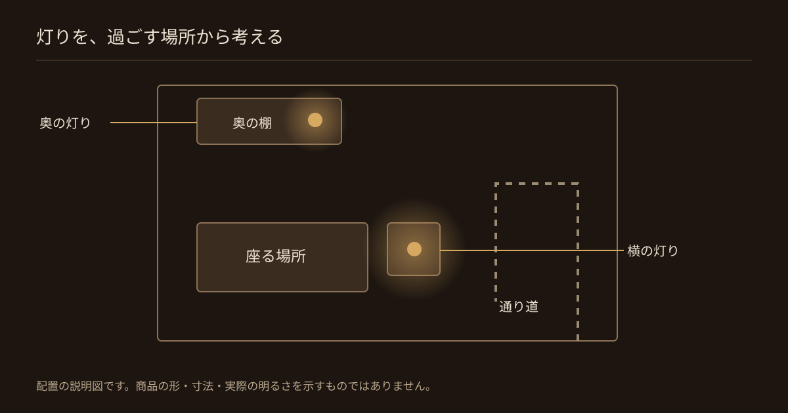
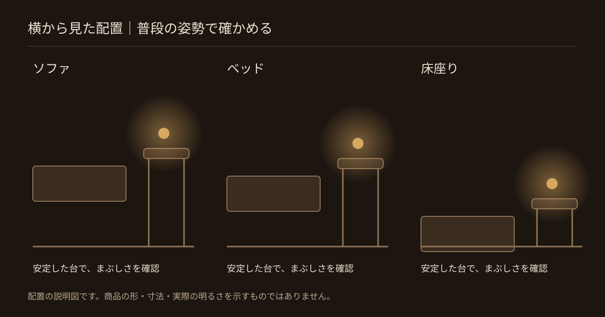
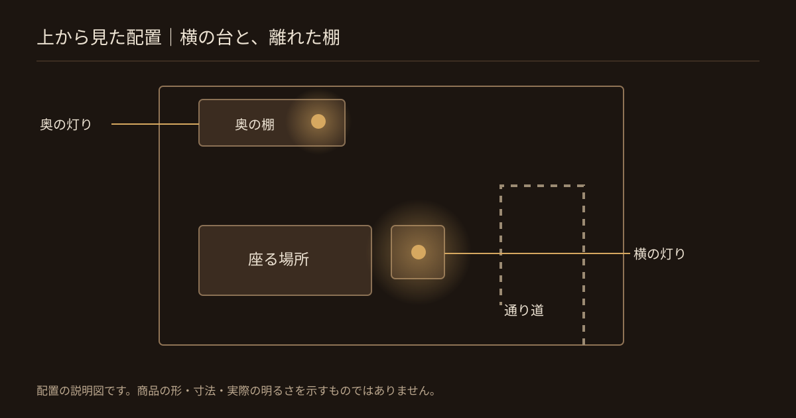
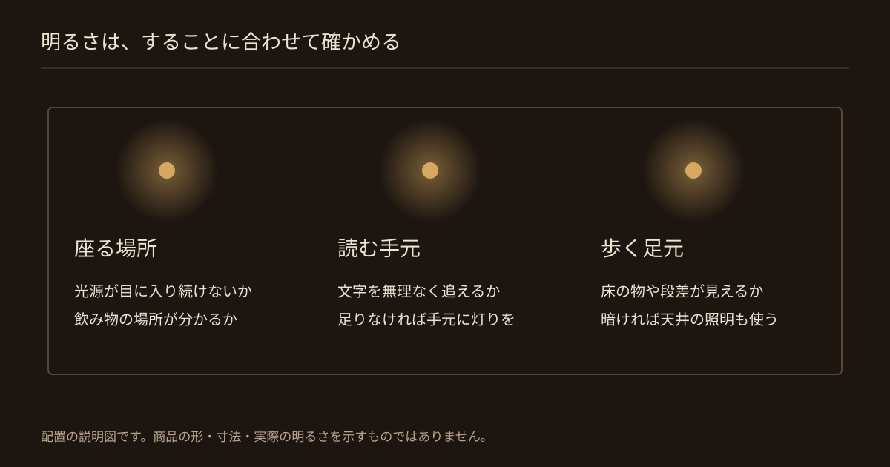
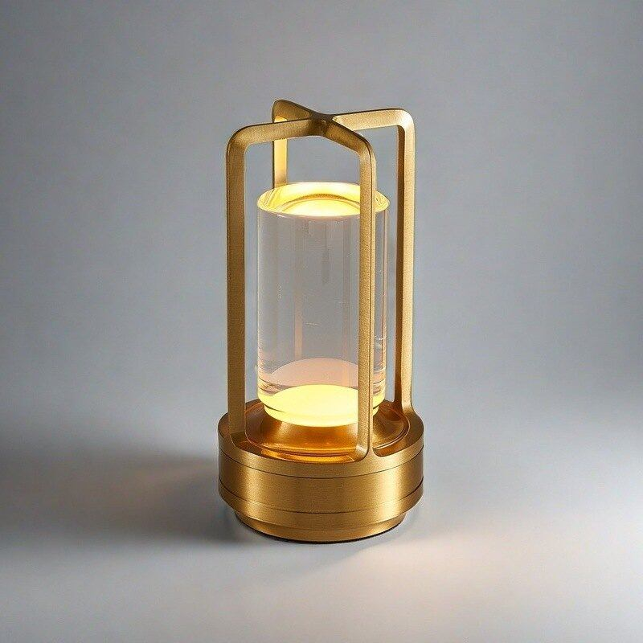
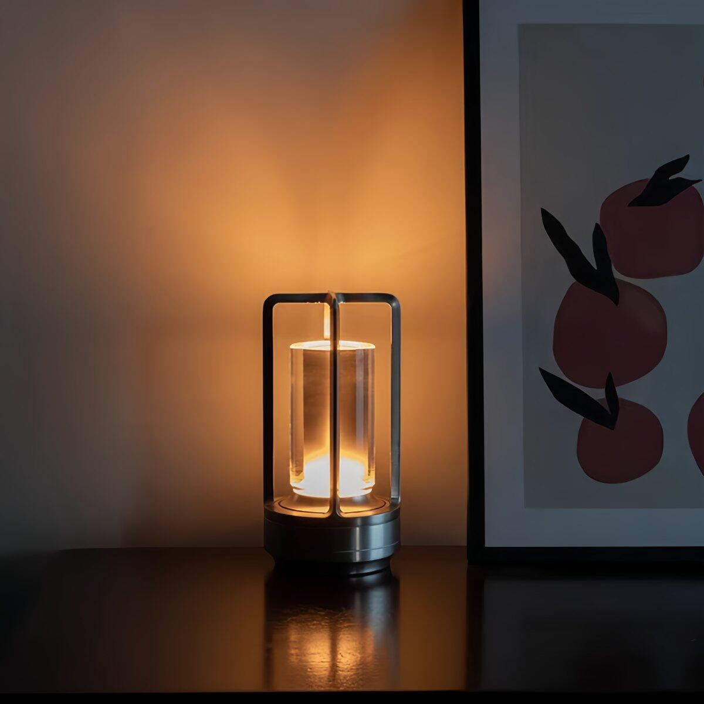
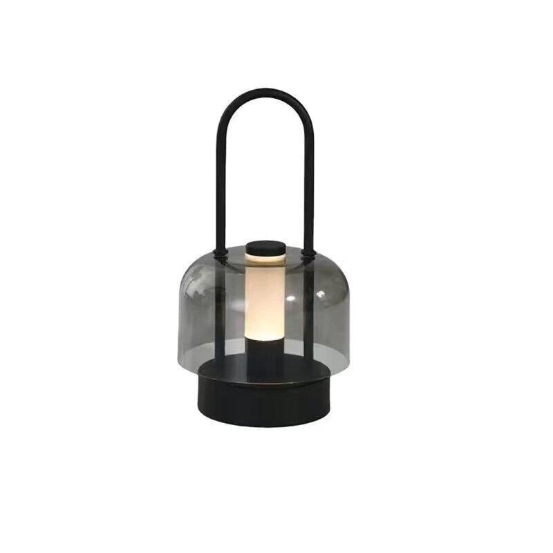
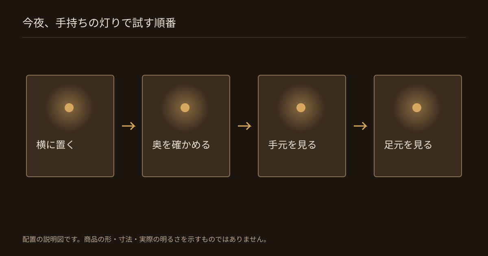
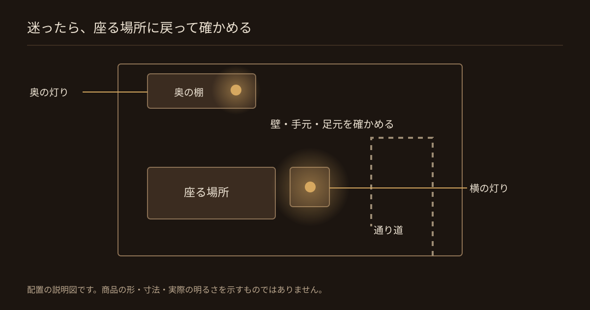

ワンルームの灯りは、まず座る場所の横に置き、そこから見える棚へ広げていくと、置き場所を決めやすくなります。 家具を買い替える前に、手持ちのランプで、まぶしさ・手元・足元の見え方を確かめてください。 天井の照明を消すことを目的にせず、自分が夜に過ごしやすい明るさへ整えましょう。
仕事から帰って飲み物を飲むとき、部屋がもう少し落ち着いて見えたら。そう思って間接照明を探しても、買ったあとにどこへ置けばいいか分からないと、選ぶところで止まってしまいます。
HYGGE TOKYOでは、大きな家具を買い替える前に、いつも座る場所のまわりを整えることを提案しています。この記事では、ソファ・ベッド・床座りのそれぞれで試せる置き方を紹介します。まずは、家にある灯りを動かすところから始めてください。
- いつも座る場所の横の台に、手持ちの灯りを置く。
- 奥が暗ければ、離れた棚にも灯りを置いて試す。
- 座ってまぶしさを確かめ、手元や足元が暗ければ天井の照明も使う。
片付けたワンルームでも、夜に落ち着かないのはなぜ？
片付けだけで見え方が変わらないときは、座った位置から見える光を確かめてみてください。 部屋全体を照らす灯りと、くつろぐ場所に欲しい灯りを分けて考えるのが出発点です。

部屋全体の明るさと、座ったときの見え方を分けて考える
部屋の中央から見てちょうどよくても、ソファに座ると光源が正面に見えることがあります。光源とは、電球やLEDなど、光を出す部分のことです。立ったまま配置を決めず、普段と同じ姿勢で見てみましょう。
日本照明工業会も、生活の場面に合わせ、必要な場所に灯りを分けて置く考え方を紹介しています。天井の照明を使うこと自体が悪いわけではありません。手元と周囲の両方を見ながら調整することが大切です。参考：住宅照明設計のポイント
間接照明とは？テーブルランプとの違い
間接照明とは、壁や天井に光を当て、反射した光で空間を照らす方法です。 一方、テーブルランプは、台の上に置いて使う照明器具の種類を指します。参考：日本照明工業会「あかりに関する単語」
テーブルランプを置けば、すべて間接照明になるわけではありません。この記事では、壁の明るさも確かめながら、置き型の灯りをくつろぐ場所へ取り入れる方法を扱います。壁を照らせるかは器具の光の広がり方によるため、商品写真だけで判断しないようにしましょう。
手順1：くつろぐ場所を決めて、その横に灯りを置く
最初の灯りは、いつも座る場所の横に置いて試します。 部屋の隅を先に飾るより、自分が過ごす場所から始めると、必要な灯りを考えやすくなります。

ソファ・ベッド・床座り、それぞれの置き場所
使うのは、家にある安定した台です。ぐらつかず、ランプの底面が端からはみ出さない机や棚を選びます。HYGGE TOKYOが提案する、最初に試す配置をまとめました。高さの正解を一律の数値で決めず、座ったときの光の見え方で調整します。
| 普段座る場所 | 最初に試す置き場所 | 座って確かめること |
|---|---|---|
| ソファ | 横にあるサイドテーブル | 光源が正面に入らず、飲み物に手を伸ばせるか |
| ベッド | 枕元の横にある安定した棚や台 | 背を預けた姿勢でも、横になってもまぶしくないか |
| 床のクッション | 横の低いテーブルの端 | 顔のすぐ前に光源が来ず、立つときにぶつからないか |
座った目線から光源がまぶしくないか確かめる
まぶしいと感じたら、買い替える前に位置を変えます。次の順に試してください。
- ランプを顔の正面から横へ動かす。
- 光源が直接見え続けるなら、別の安定した台で高さを変える。
- 調光できる器具なら、見え方を確かめながら明るさを下げる。
- 手元まで暗くなったら、位置を戻すか、ほかの照明を補う。
台がないときも、本や箱を不安定に重ねて高さを作る必要はありません。手持ちの机の端を試し、飲み物や作業の邪魔になるなら置き場所を考え直します。布で光源を覆って暗くする使い方は避け、説明書どおりに使ってください。
手順2：離れた棚に灯りを置き、部屋の奥の見え方を整える
座る場所の横だけでは奥が暗いときに、離れた場所へ灯りを足します。 最初から台数を決めず、必要な場所が見えるかを基準にしてください。

座る場所から見て奥か斜め前に置く
座ったまま見える棚やチェストの上から、置き場所を選びます。すぐ隣に灯りを並べる前に、部屋の奥へ分けてみましょう。
- いったん棚の物を動かし、ランプが安定して載る面を空ける。
- 座る場所から見て、奥か斜め前にある面へ置く。
- 点灯して座り直し、壁に光が届くか、光源がまぶしくないかを見る。
- カーテンや家具との間隔は、器具の説明書で指定された距離を守る。
壁の一部分だけが強く光るなら、器具の向きを変えられる範囲で調整するか、別の場所を試します。光の広がり方が合わない器具を、壁に押し付けたり家具の中へ隠したりする必要はありません。
置く面の高さを変える
横の台と奥の棚で置く高さを変える配置も、試し方のひとつです。ただし、高低差をつけることより、どちらの場所でもまぶしくないことを優先します。
棚がない部屋では、すでにある机やテレビ台の空いた端が候補になります。どちらも安全に置けなければ、灯りを追加せず、天井の照明を組み合わせてください。玄関から座る場所までの動線に、器具や充電コードが出ない配置にします。
手順3：光の色と明るさを、夜の過ごし方に合わせる
光の色は好みに合わせ、明るさはその場ですることに合わせます。 くつろぐときも、読書や移動に必要な明るさは残しましょう。

電球色とは、あたたかみのある光の色
電球色とは、赤みがかったあたたかみのある光の色です。夜の部屋を暖かな色合いにしたいときの選択肢になります。昼白色は白い光の色で、どちらが心地よいかは好みや使う場面で変わります。参考：日本照明工業会「あかりに関する単語」
| 確かめる項目 | 選ぶときの見方 |
|---|---|
| 光の色 | 商品の仕様欄で確認する。写真の暖かい色だけで電球色と決めない |
| 色の切り替え | 切り替えられる場合は、座った場所から好みの色を選ぶ |
| 明るさの調整 | 「調光」の記載を確かめる。色の切り替えとは別の機能 |
会話・読書・移動に必要な明るさを確かめる
天井の照明を消すかどうかは、小さな灯りを点けてから決めます。暗さを我慢せず、次の動作がしやすいかを見てください。
- 飲み物の場所やテーブルの端が分かる。
- 本を読むなら、文字を無理なく追える。
- 立ち上がって、床の物や段差を確かめられる。
- 玄関やスイッチまで迷わず移動できる。
手元だけ足りなければ作業用の灯りを、部屋全体や足元が暗ければ天井の照明を使います。天井の照明に調光機能がある場合は、必要な明るさまで調整できます。小さなランプだけで読書や部屋全体の照明をまかなえるとは限りません。
置き場所が決まったら、必要なランプを選ぶ
買う前に決めたいのは、置く場所と必要な機能です。 コンセントから離れた台で試したい場合は、充電式でコードレスに使える灯りが候補になります。使う場所とは別に、説明書どおりに充電できる場所も確保しておきます。

トルヴ テーブルランプ
ルーナ キャンドルホルダー
エーク テーブルランプ〈取手あり〉購入前に確かめる光の色・調光・給電方式
光の色の切り替えや調光機能は、商品ごとに異なります。見た目が好みでも、必要な機能があるかは別に確かめます。候補を比べるときは、この順番で確認してください。
- 台に安定して置ける大きさか。
- 欲しい光の色か。切り替えは必要か。
- 明るさを変えたいなら、調光できるか。
- 充電式・電池式・コンセント式のどれか。
- 説明書どおりの設置場所と充電場所を確保できるか。
置き場所に合わせて選ぶ商品候補
次の3点は、置く場所を試したいときの候補です。すべてを買いそろえる必要はありません。まず手持ちの灯りで不足するところを確かめてください。
今夜、手持ちの灯りで試すチェックリスト
まずはいつも座る場所の横へ灯りを置き、普段の姿勢で見え方を確かめてください。 買い足すかどうかは、そのあとで決められます。

- くつろぐ場所を決め、横の安定した台に灯りを置いた。
- 座ってみて、光源がまぶしくないか確かめた。
- 奥が暗い場合は、離れた棚に灯りを置いて試した。
- 光の色を、写真ではなく実物や仕様で確かめた。
- 読書をする手元と、歩く足元の明るさを確かめた。
- 通り道に器具やコードが出ていない。
- 暗ければ天井の照明も使い、無理のない明るさにした。
配置が決まったら、飲み物を手元に置いて、いつもどおり過ごしてみてください。HYGGE TOKYOが提案したいのは、写真のためだけに整えた部屋ではなく、自分が帰ってきて過ごしやすい一角です。
よくある質問
置き場所に迷ったら、座る場所の横から試してください。台数や高さの数字より、まぶしさと必要な明るさを確かめることを優先します。

ワンルームの間接照明はどこに置く？
壁に光を当てる間接照明は、座る場所から見える壁の近くが候補です。置き型の灯りなら、まず座る場所の横に置き、奥が暗い場合に離れた棚へ足してみてください。器具によって光の広がり方が違うため、座った位置から確かめます。
間接照明だけでは暗いときはどうする？
手元が暗ければ作業用の灯りを、部屋全体や足元が暗ければ天井の照明を組み合わせてください。雰囲気を保つために、読書や移動に必要な明るさを我慢する必要はありません。
ワンルームに間接照明を置く棚がないときは？
安定した机やベッドサイドの台など、手持ちの家具から置ける場所を探します。本や箱を不安定に重ねず、通り道を避けてください。置き場所がなければ無理に増やさず、今ある照明を使います。
間接照明とテーブルランプの違いは？
間接照明は壁や天井で光を反射させる照らし方で、テーブルランプは台の上に置く照明器具の種類です。テーブルランプを置くだけで間接照明になるとは限らず、光がどこへ届くかを確かめて使います。